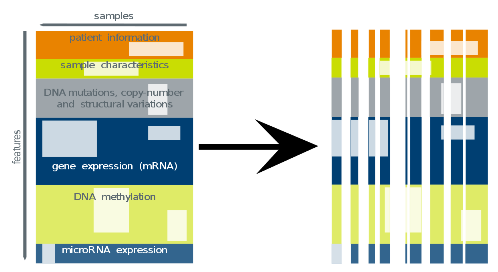
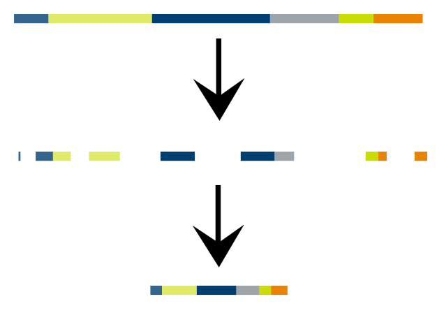

Visualizing Multivariate Analysis of Cancer Data
Dick Kreisberg
Institute for Systems Biology
February 22, 2013
http://vis.systemsbiology.net/cancer_symposium/
Outline
- Introduction
- The Cancer Genome Atlas
- Multivariate Analysis of Heterogeneous Data
- Regulome Explorer
- Pubcrawl
- Into the Future
Why do we need tools that
explore
cancer data?
- Lower the barrier to the data
-
Manage the three hurdles of data...
Scope , Scale , Complexity - Provide supporting data and context
- Distribute the effort across the research community
- Reduce the time to answer simple questions
The Cancer Genome Atlas

http://cancergenome.nih.gov/
TCGA Tumor Data
Clinical information (age, gender, vital status, tumor grade, histology)
Tumor sample high-throughput molecular data
Tumor sample high-throughput molecular data
mRNA expression (Agilent arrays and/or Illumina GA/HiSeq)
microRNA expression (Illumina GA/HiSeq)
protein expression (Reverse Phase Protein Array)
microRNA expression (Illumina GA/HiSeq)
protein expression (Reverse Phase Protein Array)
DNA methylation (Illumina 27k/450k)
DNA copy-number segmentation (Affymetrix SNP6)
DNA mutations (Illumina)
DNA copy-number segmentation (Affymetrix SNP6)
DNA mutations (Illumina)
Downstream Information:
Subtype / Cluster assignments (single-platform analysis)GISTIC regions of interest (copy-number)
Tumor Sample purity / ploidy
Somatic Mutation rates
Micro-Satellite Instability
The Reality of Research Data:
- messy
- noisy
- contradictive
- nuanced
Multivariate Analysis
There are many methods being used in cancer research. In general, we see X types of approaches.
- Statistical
- Matrix Decomposition
- Information Theoretic
- Machine Learning
Heterogeneous Feature Matrix
Association Analysis
Pairwise Analysis

-
Continuous - Continuous: F Statistic
RNAseq of BRCA2 -> -
Continuous - Categorical: ANOVA
miRNA hsa-mir-xxx -> -
Categorical - Categorical: Fisher's Exact Test
PAM50_call4 -> - Bonferroni correction applied
Pairwise Edges
Random Forest
Decision Tree Ensemble LearningRF-ACE: Random Forest with Artificial Contrast Ensembles
developed by Timo Erkkila
http://rf-ace.googlecode.com
Breiman, Leo (2001). "Random Forests", Machine Learning , 45 (1):5-32. Tuv, Eugene, et al. "Feature selection with ensembles, artificial variables, and redundancy elimination." The Journal of Machine Learning Research 10 (2009): 1341-1366.
A Decision Tree

Randomness - Bootstrapping
Randomness - Bagging
A Forest of Voting Trees

Multi-scale Association Explorer
Edges Between Genomic Features
Managing Scale
Edges With Non-Genomic Features
Analytical Integrity
(scatterplot, violinplot, cubbyhole)Colorectal Cancer Aggressiveness
A combined p-value approach to identifying molecular features associated with tumor aggresiveness.Vesteinn Thorsson
PubCrawl
Incorporating Semantic and Interaction AssociationsAndrea Eakin, Brady Bernard
Into the Future
There are new dimensions of the data and computation to explore.Tumor Type (and Subtype)
Unsupervised Clustering of Samples
Naive creation of CohortsHigh-Throughput Computation

600,000 cores running Random Forest on Google Compute Engine
Resources
| d3.js | d3js.org |
| Science.js | github.com/jasondavies/science.js/ |
| CytoscapeWeb | http://cytoscapeweb.cytoscape.org/ |
| Cytoscape.js | http://cytoscape.github.com/cytoscape.js/ |
The Center for Systems Analysis of the Cancer Regulome
Ilya Shmulevich (ISB) + Wei Zhang (MD Anderson Cancer Center)


www.cancerregulome.org
Projects @ ISB
Regulome Explorer
explorer.cancerregulome.org
Pubcrawl
pubcrawl.systemsbiology.net
Genespot
www.genespot.org
Transcriptional Regulation & Epigenetic Landscape
trel.systemsbiology.net
Search 'codefor@systemsbiology.org' at code.google.com
Acknowledgements
| Ilya Shmulevich | Wei Zhang | |
| Andrea Eakin | Hector Rovira | Da Yang |
| Jake Lin | Ryan Bressler | Yuexin Lin |
| Brady Bernard | Timo Erkkila | Yan Sun |
| Sheila Reynolds | Vesteinn Thorsson | |
| Lisa Iype | Kalle Leinonen | |
| Patrick May | Lesley Wilkerson |
dick.kreisberg@systemsbiology.org
Questions?
Reveal.JS
lab.hakim.se/reveal-js/
JSFiddle
jsfiddle.net
NodeJS
nodejs.org